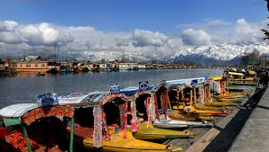
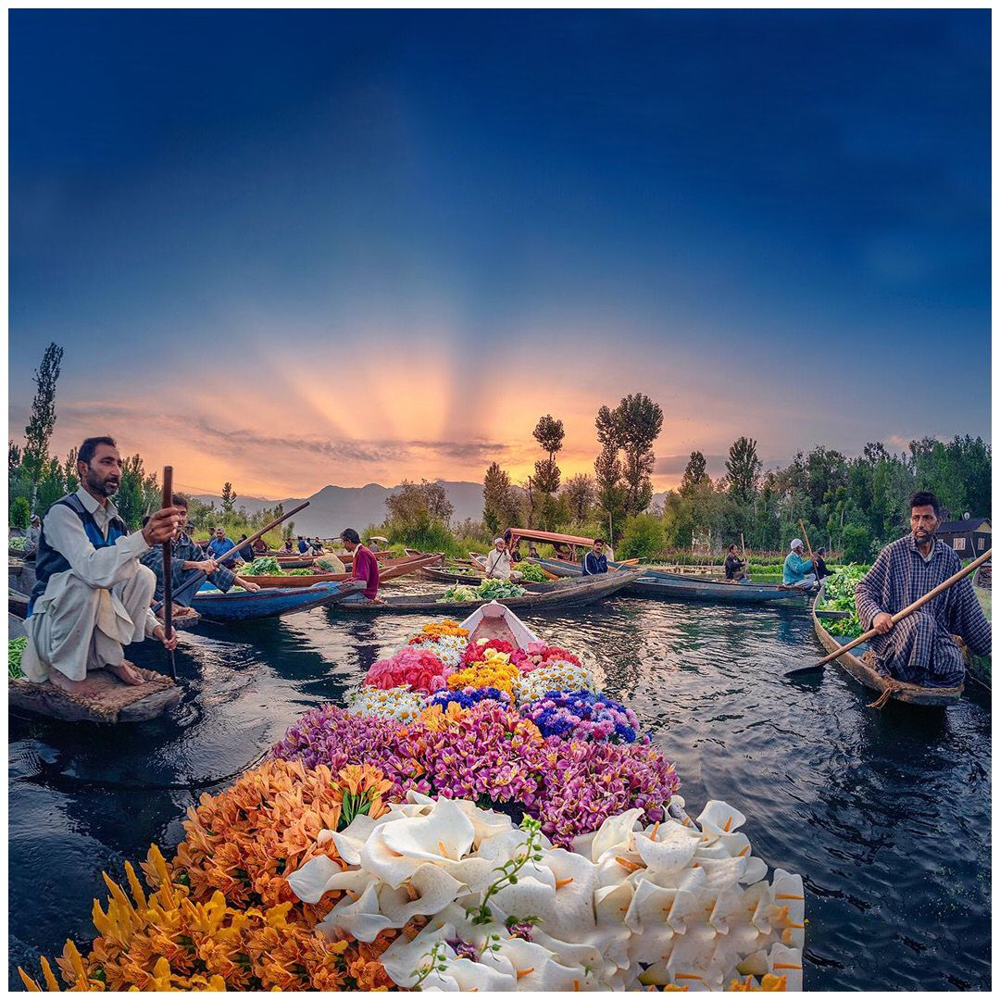
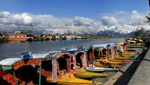
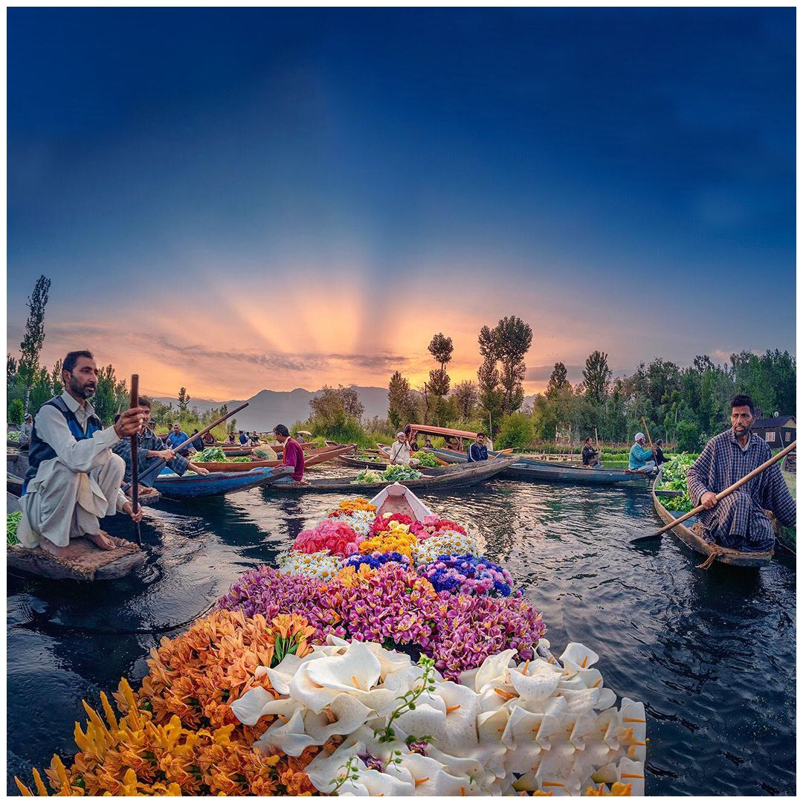

Dal is a lake in Srinagar (Dal Lake is a misnomer as Dal in Kashmiri means lake), the summer capital of Jammu and Kashmir. The urban lake, is integral to tourism and recreation in Kashmir and is named the “Jewel in the crown of Kashmir” or “Srinagar's Jewel”.The shore line of the lake, is about 15.5 kilometres (9.6 mi), is encompassed by a boulevard lined with Mughal era gardens, parks, houseboats and hotels. Scenic views of the lake can be witnessed from the shore line Mughal gardens, such as Shalimar Bagh and Nishat Bagh built during the reign of Mughal Emperor Jahangir and from houseboats cruising along the lake in the colourful shikaras. During the winter season, the temperature sometimes reaches −11 °C (12 °F), freezing the lake.The lake covers an area of 18 square kilometres (6.9 sq mi) and is part of a natural wetland which covers 21.1 square kilometres (8.1 sq mi), including its floating gardens. The floating gardens, known as “Raad” in Kashmiri, blossom with lotus flowers during July and August. The wetland is divided by causeways into four basins; Gagribal, Lokut Dal, Bod Dal and Nagin (although Nagin is also considered as an independent lake).